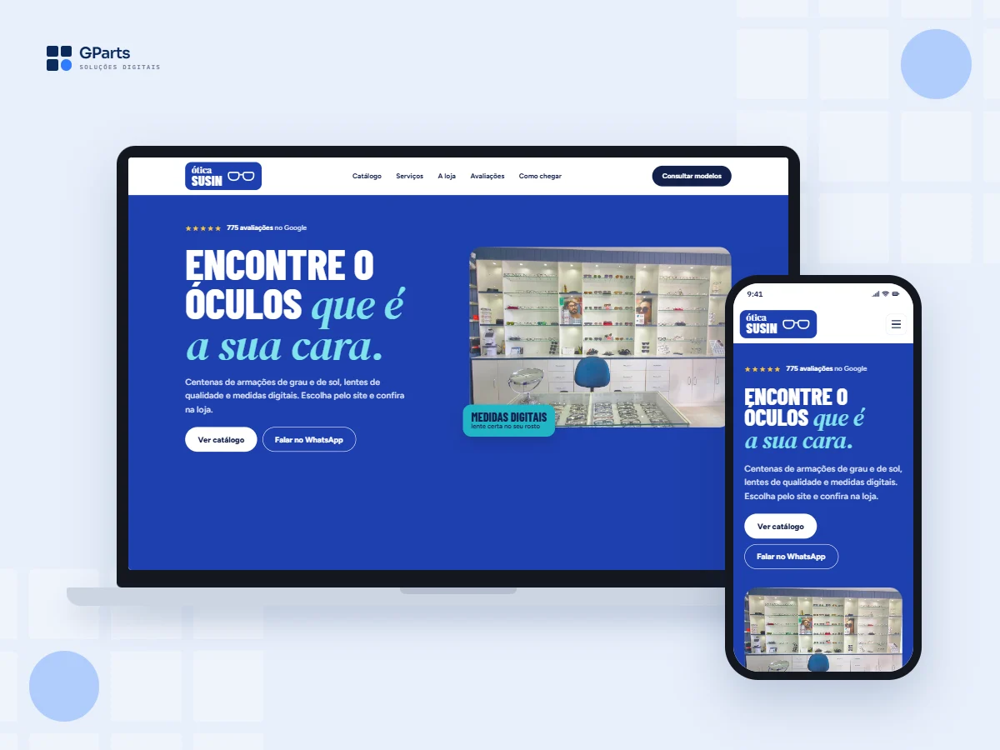

← projetos / sites
Ótica Susin
Landing page de demonstração para uma ótica: o cliente marca o que procura e a consulta de modelos chega pronta no WhatsApp.
TipoLanding page
ModeloVitrine de produtos
StackHTML · CSS · JavaScript
EstágioDemonstração

A ideia
Uma ótica tem centenas de armações e não consegue manter todas num site. Em vez de catálogo completo, a página pergunta o que a pessoa procura e a loja responde com as opções.
Como funciona
Quatro escolhas rápidas descrevem o pedido.
01CategoriaGrau, sol, infantil ou lentes de contato, com mais de uma opção ao mesmo tempo.
02EstiloPara quem é, os formatos de que a pessoa gosta e se já tem receita.
03ConsultaA loja recebe o pedido descrito e manda fotos das opções pelo WhatsApp.
Por baixo
A página chega pronta em HTML. Um script pequeno, embutido nela, cuida só das partes interativas.
Não carrega React nem outra biblioteca: o que vem de fora são as fontes, o mapa e alguns ícones.
Sem servidor: a página monta a mensagem e abre o WhatsApp do negócio com ela pronta.
Limites
É uma demonstração: o negócio ainda não é cliente, e textos, preços e prazos são ilustrativos.
Não há estoque na página: quem responde com os modelos é a loja.
próximo projetoAtendente de WhatsApp
→